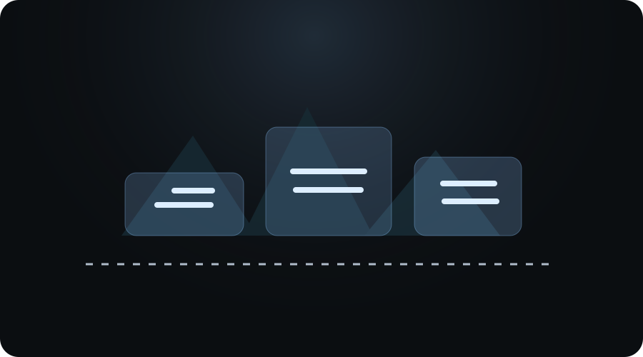

Évaluer
On clarifie votre profil, votre objectif et les concours qui correspondent le mieux à votre projet.
We help turn 2BAC into architecture students
On accompagne les passionnés d’architecture du Maroc pour réussir leur passage du bac aux écoles et concours comme SAPD, ENA et INAU, avec une méthode claire, motivante et orientée résultats.

Processus
On clarifie votre profil, votre objectif et les concours qui correspondent le mieux à votre projet.
On transforme l’ambition en méthode : plan d’action, repères, priorités et routine de travail.
On soutient chaque étape, avec un accompagnement motivant pour rester constants et sereins.
Programmes

Résultats
Notre mission
The Archi Mates aide les élèves et étudiants passionnés par l’architecture à mieux se préparer, à comprendre les enjeux des concours et à avancer avec méthode, conviction et confiance.
Du bac à l’entrée dans les écoles, avec une logique de préparation simple, humaine et ambitieuse.
Inspirations, conseils, orientation et motivation pour avancer avec clarté vers les écoles d’architecture.
Voir le profilPrêt à commencer ?